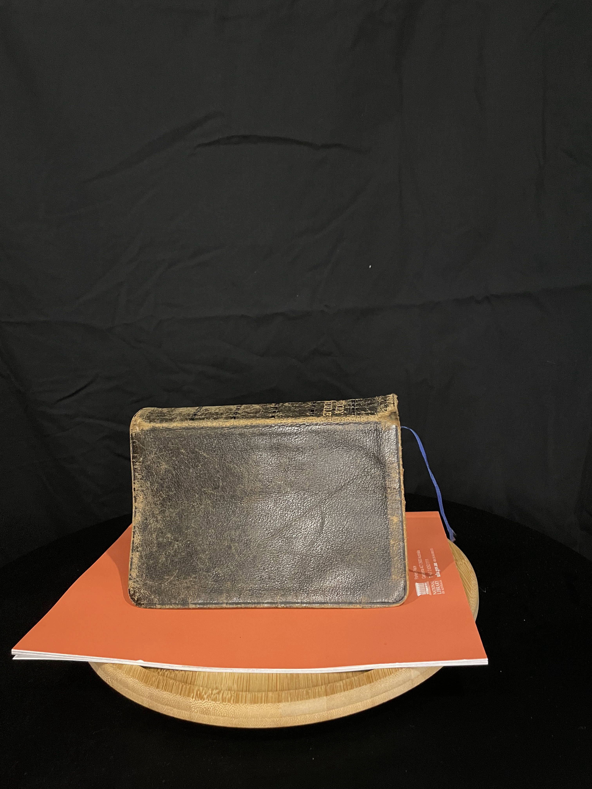

Bible Photogrammetry
Bible Photogrammetry was a university project in which I explored photogrammetry to make a commentary on themes of control expressed/interpreted from the Bible. The way the themes were explored was that images of themes where pasted all over the 3D model. To show that these topics exist in the bible and they are used to control people.
Design Process
Bible Photogrammetry This project was about creating art using a digital medium, my chosen medium was photogrammetry. Photogrammetry is the process of taking many photographs of an object from a variety of angels and stitching them together to create a 3D model. The first step in this project was to select to an object that would be the focal point of this project. After a lot of thinking my item would be a bible as people often take the meaning in it as word and must be followed fully. Once I choose an object, I had to find a bible that would be easy to perform photogrammetry on, lucky for me my grandpa had a lot of bibles, so I borrowed one his. The next stage was setting up and environment that I could 100s of photos of the bible while keeping the camera in the same place.The environment was as follows:

The reason for having a black drop was for contrast so the software could differentiate between the bible and background. The same reason was applied to the orange book that the bible was sitting on. Finally, the bible was sitting on a rotating tray so I could easily take photos of the bible from every angle. This worked by rotating the tray by a couple degrees then taking a photo as seen below:
Once all the photos were taken they were loaded into a software called Agisoft, which takes all the images and places them in the correct place to generate a 3D model. There are numerous stages to developing a 3D model from images, those stages are
- adding photos
- aligning photos
- building mesh cloud
- building higher quality mesh cloud
- building the texture
- finally building the model


Old Mesh
New Mesh
Lastly I applied the new to mesh to the 3D model into unity and placed the model in the 3D environment that you see in the pictures.


3D Model Viewer
This is a 3D model that I created for one of my design classes
The viewer was created by Google, the link for more information is https://modelviewer.dev/
This does take a while to load, due to the file size of the 3D model.